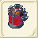
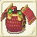
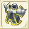

| 鎧作成 | ||||
| 画像 | 名称 | 性能 | 材料 | |
| 鎧作成Lv1 | ||||
| ソフトレザーアーマー | DEF+11〜+22 AVD-10 RSS+6〜+8 |
銅3 バルサ20 鹿の皮20 |
||
| 軟皮甲 | ||||
| ブレストプレート | DEF+17〜+32 AVD-10 RSS+4〜6 |
銅4 鉄3 バルサ20 |
||
| 護心甲 | ||||
| 鎧作成Lv2 | ||||
| ブロンズアーマー | DEF+23〜+43 AVD-10 RSS+12〜+16 |
銅7 鉄2 バルサ20 モミ20 |
||
| 青銅鎧甲 | ||||
| ライトアーマー | DEF+29〜+53 AVD-10 RSS+8〜+12 |
銅4 鉄5 銀3 鹿の皮20 |
||
| 輕型鎧甲 | ||||
| 鎧作成Lv3 | ||||
| ライトチェインメイル | DEF+38〜+64 AVD-10 RSS+18〜+24 |
銅6 鉄10 イエローメランチ20 |
||
| 輕型鎖?甲 | ||||
| リングメイル | DEF+44〜+74 AVD-10 RSS+12〜+18 |
銅5 鉄4 銀5 純銀4 モミ20 |
||
| 環甲 | ||||
| 鎧作成Lv4 | ||||
| デュエルアーマー | DEF+55〜+85 AVD-10 RSS+24〜+32 |
鉄13 銀4 純銀2 イエローメランチ20 |
||
| 鋼鐵鎧甲 | ||||
| スプリントメイル | DEF+61〜+95 AVD-10 RSS+16〜+24 |
鉄6 銀9 純銀8 イエローメランチ20 ヒバ20 |
||
| 金屬皮甲 | ||||
| クイーンブレス | RCV+2〜+5 CRI-1〜+1 CTR-1〜+1 HIT-1〜+1 AVD-1〜+1 クエストで使用 |
純銀5 銀1 金1 チタン鉱石20 フローズンアイリス20 |
||
| 鎧作成Lv5 | ||||
| ラメラーアーマー | DEF+70〜+106 AVD-10 RSS+30〜+40 |
鉄5 銀10 純銀7 金5 ツガ20 |
||
| 長型金屬鎧甲 | ||||
| チェインメイル | DEF+75〜+116 AVD-10 RSS+20〜+30 |
鉄5 銀5 純銀8 金10 ヒバ20 |
||
| 索?鎧甲 | ||||
|  | フランツアーマー | DEF+104〜111 CRI-5 CTR+8 AVD-10 RSS+19〜28 護衛スキル時にカウンター発動 |
ぐみの木20 白金4 金5 鉄3 アルマイト6 |
|
| 劍齒鎧甲 | ||||
| 鎧作成Lv6 | ||||
| プレートコート | DEF+80〜+127 AVD-10 RSS+36〜+48 |
銀5 純銀5 金5 白金10 ヒバ20 |
||
| 重鐵板甲 | ||||
| ロリカセグメンタータ | DEF+85〜+137 AVD-10 RSS+24〜+36 |
銀6 純銀6 金6 白金10 アカマツ20 |
||
| 鐵板半身甲 | ||||
| 鎧作成Lv7 | ||||
| フィールドプレート | DEF+117〜+147 AVD-10 RSS+42〜+56 |
鉄20 金5 白金5 ミスリル鋼8 アカマツ20 |
||
| 實戰鎧甲 | ||||
| ゴールデンプレート | DEF+20 MND+50 AVD-5 RSS+50 |
純銀10 金10 白金10 ミスリル鋼10 マンドレイクの表皮1 |
||
| 黄金鎧甲 | ||||
| 水龍の鎧 | DEF+168 POI+65 |
ミスリル鋼20 マイティナイト2 魔族のクリスタル2 錆びた鎧1 |
||
| 水龍鎧甲 | ||||
| 鎧作成Lv8 | ||||
| フルメタルアーマー | DEF+134〜+179 AVD-10 RSS+48〜+64 |
鉄20 ミスリル鋼10 ミスリル銀10 | ||
| 重金屬鎧甲 | ||||
| ビーストアーマー | DEF+129〜+139 RSS+18 |
銀15 ミスリル鋼20 アカマツ20 ランドクロウラーの皮1 |
||
| 野獸之鎧 | ||||
| フィールドプレート＋ | DEF+117〜+147 AVD-5 AGL-9〜-5 RSS+? |
ミスリル鋼13 ミスリル銀15 ホオノキ20 永久氷石20 ブルードラゴンの鱗20 |
||
| 實戰鎧甲+ | ||||
| 鎧作成Lv9 | ||||
| テンプルアーマー | DEF+150〜+200 AVD-10 RSS+30 |
ミスリル鋼10 ミスリル銀10 レグネシウム10 スギ20 |
||
| 帝王之鎧 | ||||
| ファントムアーマー | DEF+159 AVD+10 POI+3 STN+3 SLP+3 RSS+12 |
鉄20 ミスリル鋼10 ミスリル銀10 レグネシウム12 魔族のクリスタル5 |
||
| 亡靈鎧甲 | ||||
| 鎧作成Lv10 | ||||
| 漆黒の鎧 | DEF+165〜+221 AVD-10 RSS+? |
白金5 ミスリル鋼5 ミスリル銀10 レグネシウム1 オリハルコン5 |
||
| 漆�K之鎧 | ||||
| ナイトヒルト | DEF+238 ATK-15 AVD-7 RSS+? |
金20 レグネシウム10 オリハルコン10 マイティナイト5 魔族のクリスタル5 |
||
| 騎士鎧甲 | ||||
| 鎧作成Lv11 | ||||
|  | 赤糸威鎧 | DEF+247〜254 HIT+9 AVD-10 RSS+51 |
アルマイト13 オリハルコン2 レグネシウム10 ダマスクス鉱10 ランドクローラーの甲殻2 |
|
| 紅繩威鎧 | ||||
|  | ダレスプレート | DEF+249〜263 AVD-5 LP+106 RSS+98〜99 |
アルマイト5 ミスリル銀10 ダマスクス鉱4 オリハルコン8 ベラドンナの血2 |
|
| 守護鎧甲 | ||||